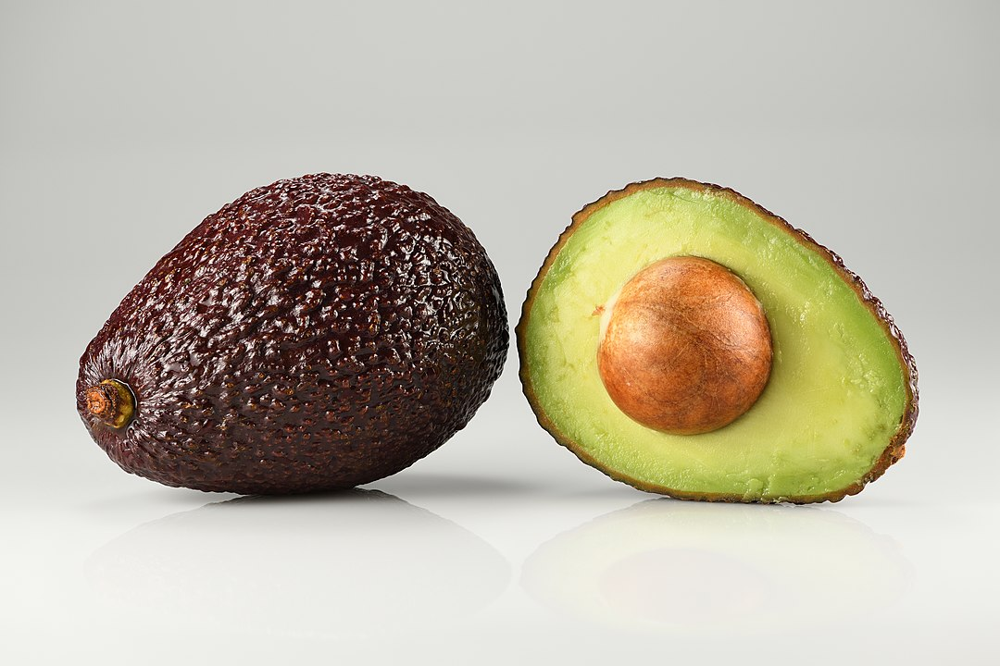

O Abacate é uma opção poderosa para a saúde! Rico em nutrientes, é um aliado tanto em pratos doces quanto salgados.
surpreendentemente, suas gorduras boas contribuem para dietas nutritivas, promovendo a saciedade e auxiliando na redução do colesterol.